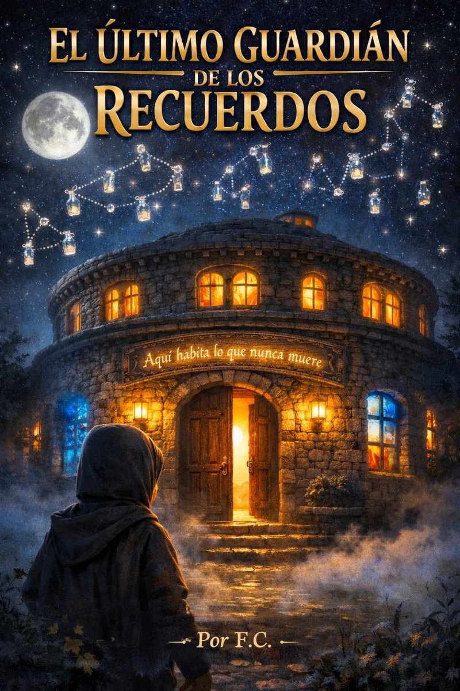
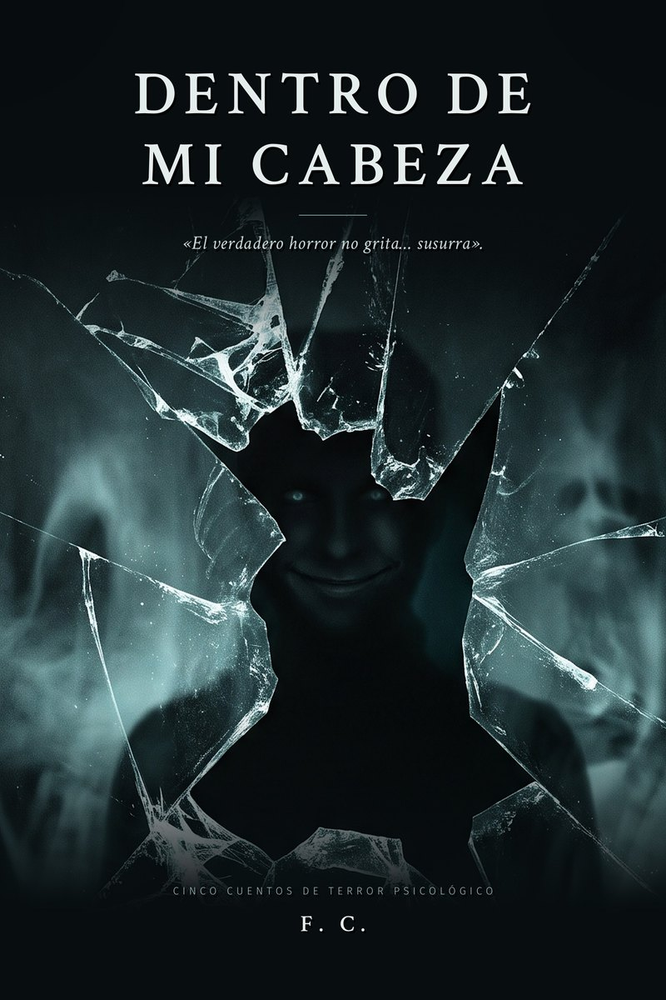

Libro IBajo la lluvia de los roblesF. C.
Bajo la lluvia de los robles
Gratis
Ver el libroUna aventura juvenil, cinco cuentos de terror psicológico y una saga de fantasía en cuatro libros. Todos empiezan gratis.
«Aquí habita lo que nunca muere».
Leo tiene doce años y un miedo que no le cuenta a nadie: que todos lo olviden. En Pueblo Hundido descubre una biblioteca donde no se guardan libros, sino recuerdos en frascos de luz. Su guardián se está desvaneciendo, y alguien está rompiendo los frascos a propósito.
Para salvar la memoria del pueblo, Leo tendrá que encontrar a Clara, la niña a la que nadie recuerda, y bajar con ella al Páramo del Olvido.
Gratis · 11 capítulos ilustrados · 54 páginas


«El verdadero horror no grita… susurra».
Un crujido que solo suena a las 3:17. Un cuadro que cambia cada mañana. Un tranvía que no llega a ninguna parte. Una caja que sabe lo que pasará mañana. Un reflejo que olvidó lo que era.
Cinco cuentos breves sobre lo que se esconde del otro lado del espejo… y dentro de la cabeza de quien se asoma.
Gratis · 16+ · 44 páginas · Segunda edición, 2026
Toda la saga está terminada, así que no tendrás que esperar años para el final. Empieza gratis con el Libro I y sigue cuando quieras. Toca un libro para ver su sinopsis y dónde conseguirlo.
Gratis
Ver el libro$99 MXN
Ver el libro$99 MXN
Ver el libro$99 MXN
Ver el libroSudcalia Estudios prepara la adaptación de La Saga de los Robles Eternos en temporadas de 12 episodios, que podrás ver en Sudcalia Play.
Ver el proyecto animadoEl último guardián de los recuerdos, Dentro de mi cabeza y el Libro I de la saga ya puedes leerlos gratis. Deja tu correo y te avisamos cuando salgan los libros II, III y IV y los próximos títulos.